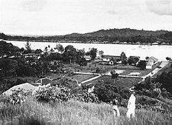
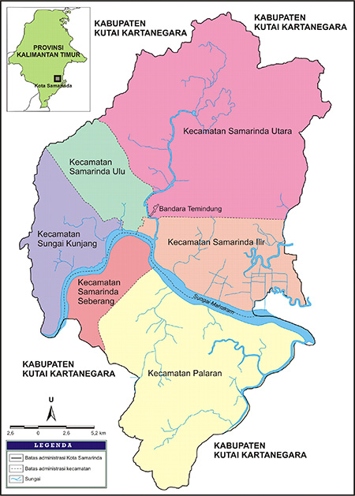
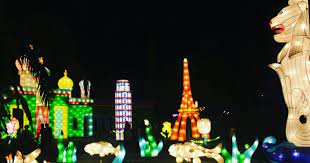
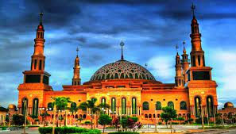
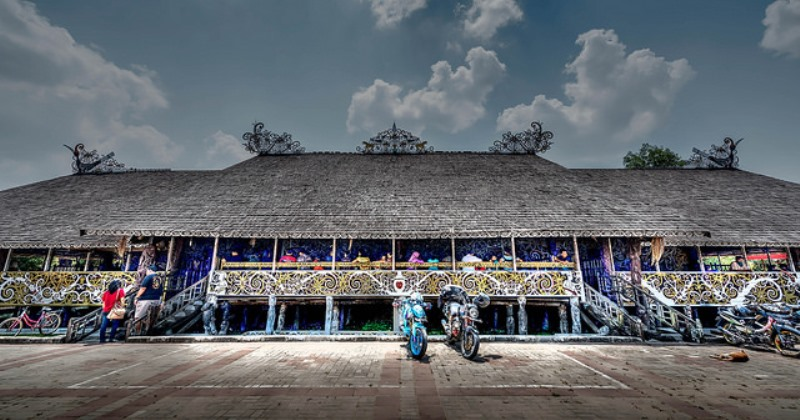

Sejarah

Samarinda dikenal sebagai ibu kota Kalimantan Timur. Samarinda yang dikenal sebagai kota seperti saat ini dulunya adalah salah satu wilayah Kesultanan Kutai Kartanegara ing Martadipura. Pada abad ke-13 Masehi (tahun 1201–1300), sebelum dikenalnya nama Samarinda, sudah ada perkampungan penduduk di enam lokasi yaitu Pulau Atas, Karangasan (Karang Asam), Karamumus (Karang Mumus), Luah Bakung (Loa Bakung), Sembuyutan (Sambutan) dan Mangkupelas (Mangkupalas). Penyebutan enam kampung di atas tercantum dalam manuskrip surat Salasilah Raja Kutai Kartanegara yang ditulis oleh Khatib Muhammad Tahir pada 30 Rabiul Awal 1265 H (24 Februari 1849 M).
Pada tahun 1565, terjadi migrasi suku Banjar dari Batang Banyu ke daratan Kalimantan bagian timur. Ketika itu rombongan Banjar dari Amuntai di bawah pimpinan Aria Manau dari Kerajaan Kuripan (Hindu) merintis berdirinya Kerajaan Sadurangas (Pasir Balengkong) di daerah Paser. Selanjutnya suku Banjar juga menyebar di wilayah Kerajaan Kutai Kartanegara, yang di dalamnya meliputi kawasan di daerah yang sekarang disebut Samarinda.
Geografis

Kota Samarinda beriklim tropis basah, hujan sepanjang tahun. Temperatur udara antara 20 °C – 34 °C dengan curah hujan rata-rata per tahun 1980 mm, sedangkan kelembaban udara rata-rata 85%. Bulan terdingin terjadi pada bulan Januari dan Februari, sedangkan bulan terpanas terjadi pada bulan April dan Oktober. Berikut ini adalah tabel kondisi cuaca rata-rata di wilayah kota Samarinda dan sekitarnya.
Kota Samarinda memiliki banyak sungai. Ada 27 sungai alam yang mengalir di dalam Kota Samarinda dan tersebar di beberapa Kecamatan dan Kelurahan. 27 sungai alam yang ada di Samarinda itu kemudian dibuatkan Surat Keputusan Walikota Samarinda tentang Penetapan Sungai Sungai alam dalam wilayah Kota Samarinda tahun 2004, yang ditanda tangani Walikota Samarinda H. Achmad Amins Berikut ini adalah daftar sungai alam yang mengalir di Kota Samarinda Kalimantan Timur.
Demografi
Suku bangsa
Kota Samarinda dihuni berbagai macam suku bangsa. Suku bangsa terbesar yaitu suku Jawa (36,70%), disusul Bugis (24,14%), Banjar (14,43%), Kutai (6,26%) dan Toraja (2,13%). Kemudian ada juga suku bangsa lainnya, yaitu Dayak, Minahasa, Tionghoa, Mandar, Buton, Minangkabau, Makassar, Madura, Batak, Sunda dan lain-lain.
Agama
Masyarakat kota Samarinda memeluk berbagai macam agama, diantaranya Islam (87.32%), Kristen Protestan (8.65%), Katolik (2.54%), Buddha (1.09%), Konghucu (0.21%), Hindu (0.13%) dan Kaharingan (0.06%).
Pemerintahan
Secara yuridis Kota Samarinda terbentuk berdasarkan Undang-Undang Republik Indonesia Nomor 27 Tahun 1959. Dasar untuk menetapkan hari jadi kota Samarinda adalah kesimpulan tim penyusun sejarah yang dibentuk Pemerintah Daerah Kotamadya Samarinda berdasarkan asumsi dan prediksi atau estimasi 64 hari masa pelayaran dari Wajo menuju Samarinda, sejak penandatangan Perjanjian Bongaya 18 November 1667. Akhirnya, diperoleh hasil tanggal 21 Januari 1668, yang bertepatan pula dengan hari jadi Pemerintah Daerah Samarinda, 21 Januari 1960.
Telah ditetapkan pada peraturan Daerah Kotamadya Daerah Tingkat II Samarinda Nomor: 1 tahun 1988 tanggal 21 Januari 1988, pasal 1 berbunyi, "Hari Jadi Kota Samarinda ditetapkan pada tanggal 21 Januari 1668 M, bertepatan dengan tanggal 5 Sya'ban 1078 Hijriyah". Penetapan ini dilaksanakan bertepatan dengan peringatan hari jadi kota Samarinda ke-320 pada tanggal 21 Januari 1988.
Tanggal 21 Januari 1668 adalah hari yang diperkirakan dari satu versi sebagai awal kedatangan orang-orang suku Bugis Wajo yang kemudian mendirikan pemukiman di Samarinda Seberang. Meskipun demikian, sebelum rombongan Bugis Wajo datang ke Samarinda, sudah ada peradaban komunitas Kutai Kuno dan Banjar di wilayah Samarinda.
Wisata
Samarinda dikenal dengan adanya Sungai Mahakam dan sebagai ibu Kota Kalimantan Timur, selain memiliki tempat wisata "Tepian Mahakam", Samarinda juga memiliki tempat wisata sebagai berikut :
Mahakam Lampion Garden

Mengujungi Mahakam Lampion Garden saat malam hari merupakan pilihan tepat. Kecantikan berbagai bentuk lampion yang cantik, siap menyambut Kamu. Pesona lampu lampion yang kelap-kelip, menjadi pemanis di tepian Sungai Mahakam. Kamu bisa puas berfoto di banyak spot lampion, atau bermain di berbagai permainan seru yang disediakan.
Masjid Islamic Center

Berdiri sejak 19 tahun yang lalu, Masjid Islamic Center Samarinda ini menjadi salah satu destinasi wisata religi yang selalu ramai dikunjungi wisatawan. Daya tariknya terletak pada gaya arsitektur bangunan, yang konon terinspirasi oleh Hagia Sophia, Turki.Masjid ini juga memiliki satu menara dengan tinggi 99 meter, sebagai lambang dari asmaul husna. 6 menara pendek sebagai lambang rukun iman, dan 33 buah anak tangga sebagai lambang jumlah butiran tasbih.
Desa Budaya Pampang

Desa Budaya Pampang, menjadi salah satu destinasi yang bisa Kamu kunjungi jika ingin mengenal budaya lokal suku di Samarinda. Desa budaya ini dihuni oleh suku Dayak Kenyah asli. Desa ini juga memiliki keunikan, tak heran jika banyak wisatawan yang berkunjung kesini. Selain melihat berbagai aktivitas warga suku Dayak, Kamu juga bisa menikmati pertunjukan seni setiap hari minggu siang di balai pertemuan atau lamin. Uniknya, saat pertunjukan berlangsung seluruh masyarakat Desa Pampang akan mengenakan baju tradisionalnya.